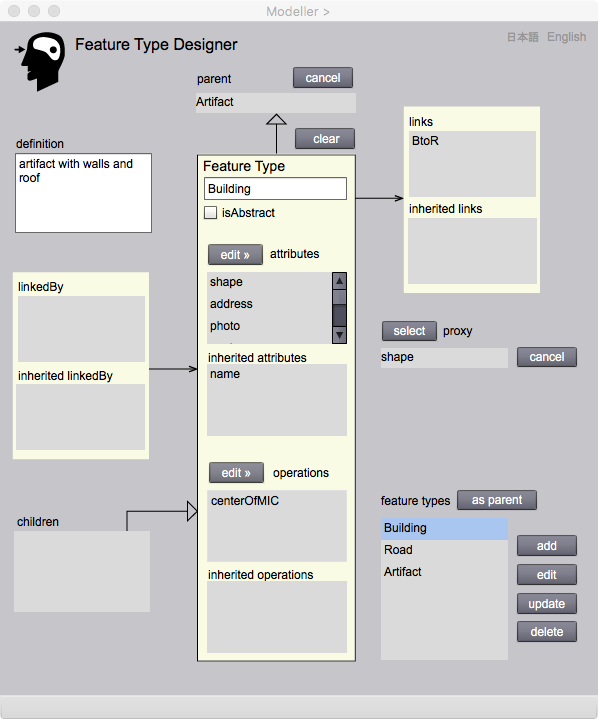

Feature Type Designer
地物型の設計
ここでは，実世界の現象を見て，地物型をどのように設計するか，説明します．GFMによれば，地物型は複数の属性と操作をもつことができます．また，地物型はより上位の概念をもつ地物型のプロパティを継承することができます．さらに，他の地物型と関連することがあります．例えば，「森林」はより抽象的な地物型である「植生域」のプロパティを継承するかも知れませんし，「河川」は「橋」と関連するときは，例えば「河川橋梁関連」といった関連型に，関連元の地物 (From) としてリンクし，「橋」は関連先の地物 (to) としてリンクされるでしょう．
地物型は抽象型，または具象型です．抽象型はインスタンスをもたない抽象的な概念を定義するときに指定します．一方，具象型は，インスタンスを生み出すことができる型です．自治体が都市計画を行う範囲を示す都市計画区域は，市街化区域，市街化調整区域，非線引き区域に分かれますが，都市計画区域は下位の区域の上位概念として抽象型，市街化区域，市街化調整区域，非線引き区域は特殊な都市計画区域として，下位の具象型として定義することが出来ます．都市計画区域という区域は，具体的には，その性質を継承する区域として実世界に提示されるからです．
抽象型の地物は具象型の性質は持たないので，具象型地物の下位型にはなりません．
Feature Type Designer ページ は，地物型の定義と編集を行うためにあります．その中で，属性及び操作の定義と編集については，このページから起動するAttribute Type Designer ページ と，Operation Type Designer ページ で行います．また，他の地物型との関連については，Apprication Schema Designer から起動するAssociation Type Designer で行います．
Feature Type Designer

図１．Feature Type ページの操作画面
表示欄
Feature Type（編集可能）
地物型の名前をここにキーインします．名前はアルファベットで，頭文字は大文字，その他は小文字にします．この名前は一意でなければいけません．もし重複するとエラーになります．また，地物型の名前は必ず与えなければいけません．
definition（編集可能）
新たな地物型の意味を，ここで記述します．
attributes
宣言された属性の名前の一覧が表示されます．属性の宣言は editAttributes ボタンを押して，Attribue Type Designer を表示し，その中で行います．
inherited attributes
より上位の地物型から継承された属性の一覧が表示されます．
operations
宣言された操作の名前の一覧が表示されます．操作の宣言は edit operations ボタンを押して，Operation Type Designer を表示し，その中で行います．
inherited operations
より上位の地物型から継承された操作の一覧が表示されます．
proxy
地物の代理になる属性をproxy属性といいます．この欄には選択されたproxy属性の型の名前が表示されます．具象地物型は必ず一つの proxy 属性をもちます．Gittok では現在，proxy になれるのは幾何属性と文字列属性です．これは，例えば数字だと値が重複する可能性があり，ブール値だと属性値の一意性を確保することができず，他の地物と分別することが困難だからです．Proxyは、関連インスタンスの生成時や，地図などの地理情報表現で使用します．関連は，地物から別の地物への結びつきを表しますが，具体的にどの地物同士を結びつけるか決める時は，proxyが表現されている地図や一覧表などで指定します．詳しくは，Editorページにある説明（関連インスタンスの取得）をご覧ください．
links
この地物型がリンクする関連型の名前の一覧です．関連型にとっては，この地物型は，関連元を示すことになります．関連型の定義は, Application Schema Designer から Association TypeDesigner を表示させ，その中で行います．
inherited links
より上位のクラスから継承されてきた関連型の名前の一覧です．
linkedBy
この地物型がリンクされる関連型の名前の一覧です．関連型にとっては，この地物型は，関連する相手を示すことになります．関連型の定義は, Application Schema Designer から Association TypeDesigner を表示させ，その中で行います．
inherited linkedBy
より上位のクラスから継承されてきた，リンクされる関連型の名前の一覧です．
feature types
ここで定義され，追加された地物型の名前の一覧が，ここに表示されます．
parent
すでに定義された地物型のリストの中から一つの地物型を選択し，asParent ボタンを押すと，この欄にその名前が表示されます．この型は新たに定義される地物型の上位型になりますので，そのプロパティが全て継承されます．一度宣言した Parent を取り消すときには，cancel ボタンを押します．
children
地物型が下位型をもつときは，この欄に名前の一覧が表示されます．
ボタン
isAbstract
ここをチェックすると，地物型は抽象型になります．チェックをはずすと，インスタンスを生成することができる具象型になります．
add
地物型の定義が終了したら，このボタンを押します．すると，地物型の定義が登録され，その名前が feature types に追加表示されます．
edit
feature types 一覧上で地物型を選択した後，このボタンを押すと，地物型の構成要素が Feature Type Modeler 内の各欄に表示され，編集可能になります．
update
地物型の編集を行った後，このボタンを押すと，編集済みの地物型に置換されます．
delete
feature types 一覧上で適当な地物型を選択した後，このボタンを押すと，該当する地物型が消去されます．ただし，下位型をもつ場合や，他の地物型と関連する場合は，消去することができません．
asParent
feature types 一覧上で適当な地物型を選択した後，このボタンを押すと，該当する地物型が，今編集している地物型の上位型になり，Parent 欄にその名前が表示されます．
cancel
このボタンを押すと，今編集している地物型の上位型が取り消しになり，Parent 欄からその名前が消えます．
clear
現在表示している地物型のパラメータが全て消去され，新たな地物型の定義が可能になります．
edit attributes
このボタンを押すと，Attribute Type Designer が表示され，属性型の宣言が可能になります．
edit operations
このボタンを押すと，Operation Type Designer が表示され，操作型の宣言が可能になります．
日本語
今あなたが読んでいるドキュメントが表示されます．
English
You can read the tutorial written in English.